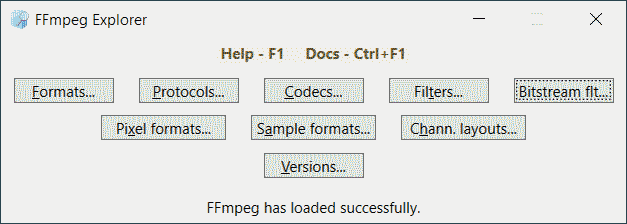

FFmpeg Explorer
Autor: Dmitry Ponomarev
Contact: dmfrox219@mail.ru
Общая информация
Форматы
Протоколы
Кодеки
Фильтры
Bitstream-фильтры
Форматы пикселей, аудиоотсчетов и раскладки аудиоканалов
Версии
Настройка логирования
Приложение позволяет получить информацию о компонентах FFmpeg — демультиплексорах, мультиплексорах (форматах), протоколах, кодеках, фильтрах, bitstream-фильтрах. Также можно получить информацию о форматах пикселей, форматах аудиоотсчетов, раскладках аудиоканалов, версиях сборки и библиотек.

Кнопка Formats... вызывает окно, которое показывает список всех форматов. Для каждого формата показывается имеющийся демультиплексор, мультиплексор (или один из них). Далее можно получить подробную информацию о демультиплексоре или мультиплексоре: имя, описание, ассоциированные расширения файлов, ассоциированные MIME. В поле Privat options находится список всех частных опций, используемых для настройки формата. Кнопка Save... вызывает процедуру записи форматов в текстовой файл. Кнопка Docs открывает справочную страницу по форматам на официальном сайте FFmpeg.
Частные опции можно просмотреть в более подробном варианте, кнопка Detailed... вызывает окно, где опции показываются с типом, значением по умолчанию и описанием.
Можно также получить подробный список всех опций, поддерживаемых структурой AVFormatContext (кнопка Context...), но следует иметь в виду, что каждый конкретный демультиплексор или мультиплексор поддерживает далеко не все из них.
В окнах опций кнопка Save... вызывает процедуру записи опций в текстовой файл.
Кнопка Protocols... вызывает окно, которое показывает список всех протоколов. Для каждого протокол показывается имя, направление (входной/выходной), опции для настройки. В поле Privat options находится список всех частных опций, используемых для настройки протокола. Кнопка Save... вызывает процедуру записи протоколов в текстовой файл. Кнопка Docs открывает справочную страницу по протоколам на официальном сайте FFmpeg.
Частные опции можно просмотреть в более подробном варианте, кнопка Detailed... вызывает окно, где опции показываются с типом, значением по умолчанию и описанием. В этом окне кнопка Save... вызывает процедуру записи опций в текстовой файл.
Кнопка Codecs... вызывает окно, которое показывает список всех идентификаторов кодеков. На верхнем уровне идентификаторы кодеков сгруппированных по медиатипу. Внутри этой группы список можно сортировать по значению идентификатора кодека или по имени. Для каждого идентификатора кодека показывается его основные свойства и список декодеров и кодеров.
Свойства идентификатора кодека включают имя, описание и три флага: Lossless (возможность сжатия без потерь), Lossy (возможность сжатия с потерями) и Intra frame-only (покадровое сжатие).
Для каждого декодера или кодера показывается имя, описание, флаг Experemental, форматы кадров, поддерживаемые режимы аппаратного ускорения. В поле Privat options находится список всех частных опций, используемых для настройки кодека. Кнопка Save... вызывает процедуру записи кодеков в текстовой файл. Кнопка Docs открывает справочную страницу по кодекам на официальном сайте FFmpeg.
Частные опции можно просмотреть в более подробном варианте, кнопка Detailed... вызывает окно, где опции показываются с типом, значением по умолчанию и описанием.
Можно также получить подробный список всех опций, поддерживаемых структурой AVCodecContext (кнопка Context...), но следует иметь в виду, что каждый конкретный кодек поддерживает далеко не все из них.
В окнах опций кнопка Save... вызывает процедуру записи опций в текстовой файл.
Кнопка Filters... вызывает окно, которое показывает список всех фильтров в виде таблицы. Для каждого фильтра показывается имя, количество и медиатип входов/выходов, поддержка команд, краткое описание. Внимание, если количество входов или выходов указано как 0, то это может означать их переменное число, для уточнения надо смотреть документацию. В поле Privat options находится список всех частных опций, используемых для настройки протокола. Кнопка Save... вызывает процедуру записи фильтров в текстовой файл. Кнопка Docs открывает справочную страницу по фильтрам на официальном сайте FFmpeg.
Частные опции можно просмотреть в более подробном варианте, кнопка Detailed... вызывают окно, где они показываются с типом, значением по умолчанию и описанием.
Кнопка Context... вызывает окно, где показываются опции, поддерживаемые структурой AVFilterContext.
В окнах опций кнопка Save... вызывает процедуру записи опций в текстовой файл.
Кнопка Bitstream flt... вызывает окно, которое показывает список всех bitstream-фильтров в виде таблицы. Для каждого из них приводится имя, поддерживаемые идентификаторы кодеков. В поле Privat options находится список всех частных опций, используемых для настройки bitstream-фильтров. Кнопка Save... вызывает процедуру записи фильтров в текстовой файл. Кнопка Docs открывает справочную страницу по bitstream-фильтрам на официальном сайте FFmpeg.
Частные опции можно просмотреть в более подробном варианте, кнопка Detailed... вызывает окно, где опции показываются с типом, значением по умолчанию и описанием. В этом окне кнопка Save... вызывает процедуру записи опций в текстовой файл.
Кнопки Pixel formats..., Sample formats... и Chann. layouts... вызывают окна, которые показывают в виде таблицы форматы пикселей, аудиоотсчетов и стандартные раскладки аудиоканалов соответственно. В этих окнах кнопка Save... вызывает процедуру записи таблицы в текстовой файл. Например, окно форматов пикселей выглядит так:
В этой таблице для каждого формата пикселей отображается число компонент на каждый пиксель, число плоскостей, среднее число бит на пиксель, число бит для каждой компоненты, дополнительная информация.
Кнопка Versions... вызывает окно, которое показывает версии сборки и библиотек, а также размер библиотек.
Файлы логов находятся в папке C:/Users/user_name/AppData/Local/dm_frox/FFmpegSuite/explorer/_LOGS. Это простые текстовые файлы в кодировке UTF-8. Файл CppExpl.log содержит логи модуля FFmpegWrapper.dll и библиотек FFmpeg. Файл NetExpl.log содержит логи .NET модулей. Файлы с суффиксом _XX являются бэкапами.
Можно задать максимальный уровень логирования, используемый в модуле FFmpegWrapper.dll и в библиотеках FFmpeg, а также дополнительные опции. Параметры логирования берутся из файлов params/explorer/LogParams.xml, который содержит единственный узел:
<LogParams wrapper="3" ffmpeg="3" options="0" />
Атрибут wrapper определяет максимальный уровень логирования FFmpegWrapper.dll, атрибут ffmpeg определяет максимальный уровень логирования библиотек FFmpeg, атрибут options задает специальные режимы логирования.
Для максимального уровня логирования можно использовать значения:
0 - None;
1 - Error;
2 - Warning;
3 - Info;
4 - Verbose;
5 - Debug;
6 - Trace.
Следут иметь в виду, что в FFmpegWrapper.dll не используется уровень больше 3 (Info). Если максимальный уровень логирования библиотек FFmpeg имеет значения больше 4 (Verbose), то объем выводимой информации может быть очень большим, эти значения надо использовать с осторожностью. Перед сообщениями библиотек FFmpeg выводится специальная строка: [~имя_компоненты].
Опции могут использовать значения:
0 - не используется;
1 - операция flush после каждой строки лога;
2 - вывод дополнительно метки потока выполнения;
3 - объединение 1 и 2.
Использование этих флагов требует дополнительных ресурсов и оправданно только для отладки.